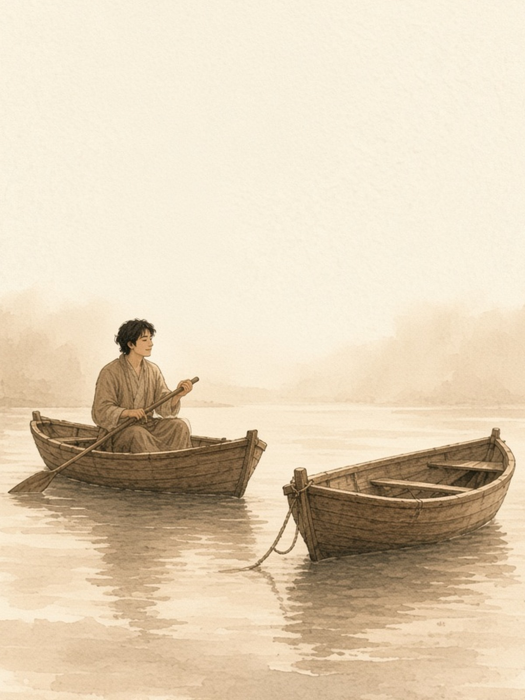

The Empty Boat
空船
From Zhuangzi · 《庄子 · 山木》
A man rented a small boat on a quiet lake. Halfway across, another boat hit his. Water splashed on his shoes. He turned, ready to shout. "Watch where you're going."
He looked into the other boat. No one was there. The rope had come loose. The boat had drifted over by itself. It turned, and drifted away.
His voice hung in the air. No one answered. He set the oar down. The anger left. Anger needs a person, if it is going to stay.
If a face had been in that boat, he would have carried the anger all the way to shore. The hit was the same hit. The only difference was the person.
An empty boat can still hit you. You don't have to find someone to blame.